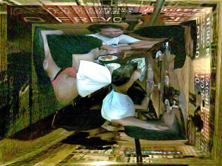

O encontro de metarecicleirxs em Recife nesta quinta feira, 25 de novembro de 2010, reforçou para mim uma aliança moral em torno das replicações metareciclagem pelo mundo afora.
Este relato é o segundo que faço sobre aquele encontro. O primeiro se perdeu entre um bug do site e alguma burrada minha em paralelo. Mas, talvez esta seja uma boa oportunidade de reelaborar todo um texto carregado de percepções principalmente sentimentais.
Cheguei quase duas horas atrasado, então o pessoal já me recebeu no bar e isto eu acho que criou um clima mais camarada e menos formal que para mim foi muito importante. Porque não sei como seria primeiro discutir metareciclagem formalmente para depois partir para uma confraternização. E era essa a agenda que parecia estar se configurando. Mas meu atraso não foi proposital e durante todo o percurso de ida (de Intermares - Cabedelo até a frente da Torre Malakoff - Recife) minha cabeça esteve a mil por hora. O que sairia dali? Depois fiquei curioso sobre o que pode ter sido conversado antes. Será que teremos mais relatos?
Me encontrei com o @yazius na Conde da Boa Vista e fomos para o apartamento da @raquellirax, depois de um rápido cafezinho saímos em caminhada para o Bairro do Recife. Chegando por lá fomos recebidos por @LulaPCosta, @rbrazileiro, @meirycoelho, @andreasaraiva, @lincoln, @cabraligor e mais uma galera que tava comendo e bebericando junto. O momento da materialização dos avatares é sempre muito legal. É impressionante como a gente desenvolve carinho e respeito por relações que se dão prioritariamente por interações online. E assim a noite seguiu agradável, regada a cerveja e num ambiente meio mágico, meio real, meio concreto, meio e inteiro. Energias do centro de Recife.
Das coisas que ainda estão martelando por aqui nos pensamentos trago algumas falas e alguns momentos. Seja para marcar possíveis interlocuções futuras daquela conversa, seja apenas para registrar com carinho momentos muito agradáveis que passamos juntos. Ainda que nem tudo tenha sido carinho e agradabilidades. O tom político esteve forte em vários momentos deixando brotar as convicções, as ideologias e as marcas de vida das pessoas ali presentes.
A Meiry Coelho frisou uma associação entre MetaReciclagem e movimentos. A necessidade da MetaReciclagem se assumir enquanto movimento e consequentemente a necessidade de ser divulgado um histórico neste sentido: "Vamos apresentar a rede", disse ela. Nesse momento Brazileiro, eu e Lula falamos do Mutirão da Gambiarra I. Mas ao mesmo tempo ponderei sobre o formato e o conteúdo desta publicação. Contar uma história com fragmentos da lista e textos de diferentes pessoas mostra pluralidade ou diversidade, mas não deixa de ser apenas um recorte, e que nesse caso me parece centrado em contextos e grupos específicos. O que podemos fazer para promover a produção das histórias MetaReciclagem com outros recortes, contextos e grupos então? E como essas produções inscrevem MetaReciclagem como movimento? O que deveria ser MetaReciclagem como um movimento?
Andréa Saraiva nos falou, emocionada, sobre as vivências MetaReciclagem da galera do Ceará. Sobre os momentos das percepções, das aprendizagens compartilhadas, dos sentimentos de acesso e descoberta dxs meninxs. Dos brilhos nos olhos. E no segundo seguinte emendou: "É preciso fazer disso economia, sustentabilidade". MetaReciclagem enquanto economia é para mim o cerne da aliança moral da qual falo aqui. Daquelas coisas que rasgam a alma para a responsabilidade que precisa ser assumida. É a prática de permitir que metarecicleirxs vivam como metarecicleirxs. Questão para a qual meu host Cyrano pode ser trazido para o centro da conversa, por sua percepção da experiência com a vertigem metarec nesse ponto da sobrevivência e de como ele vem desenvolvendo isto. Enquanto que em termos de lixo eletrônico a experiência e-waste lá do Ceará que Regiane Nigro nos relata pode ser o foco das atenções para a construção de soluções. Afinal, que outro esporo metarec está numa dinâmica tão avançada de negociações e compreensões práticas do processo como este?
Com Ricardo Brazileiro fiquei "tirando onda", na melhor das intenções de trazer à fala as percepções do próprio sobre os RedeLabs e a Cultura Digital Experimental. Então sentenciei: "É produto! Você compõe um produto e é elemento valioso nessa composição". E essa minha compreensão do produto (que não quer dizer algo acabado nem fechado mas nesse caso em processo contínuo) e como isto está relacionado com mercado e com marketing acho que é uma coisa interessante de ser falada, visualizada e discutida. Até porque não me pareceu ser uma visão clara pra quem na hora estava ligado na conversa. O que me chama mais a atenção ainda para os processos não manifestos inscritos nas nossas ações diárias. Brazileiro, claro, muito elegantemente colocou alguns questionamentos para uma compreensão geral da questão, mercado - produto, e ficamos no aberto para um papo que espero ainda role qualquer hora dessas.
Outro ponto interessante que se atiçou feito brasa no vento foi a percepção do Luiz P. Costa sobre um discurso meu, centrado segundo ele em "estereótipos". Não sei realmente do que o Lula tava falando, mas achei na hora que devia ser referente a algum dos meus ataques à academia, questão sobre a qual a Fabiana Moraes (inteligente, bela e sentada entre os dois no momento) ficou me aturando falar a partir de uma visão de construção da alteridade e do estádio do espelho em Lacan. Pode?! Ahh, e ainda aturou grosseria e dedo em riste meus. Fabiana, já me desculpei e agradeci sua paciência, mas reitero aqui porque nunca é demais. Lula, vamos botar pra frente essa questão que você tá vendo ai!! Afinal, você é o grande parceiro do Encontro do Recife, por quem eu tenho muito respeito e estima.
A noitada dos metarecicleirxs em Recife ainda produziu várias surpresas agradáveis naquele dia. Já começou com o prazer de ter o Lincoln ali com a gente pra recordar e celebrar Dpádua. Depois a Maíra Brandão apareceu por lá sorridente e atenciosa pra dar um abraço e somar sua energia e forças. A valéria e o Seu Lira, respectivamente companheira e pai da Raquel Lira também estiveram por lá. Valéria chegando de uma seleção para o mestrado em Antropologia na UFPE e com a cabeça meio ainda cheia de caraminholas. Seu Lira, dentre outros assuntos dos tantos que domina, nos passou um tutorial para churrasco sem fumaça. Metarecicleirx geral! Na sequencia quem chegou e esticou a noite conosco foi Beth de Oxum, com tranquilidade e colocações precisas nas suas avaliações do processo de comunicação na rede de pontos e nos projetos com rádios que está a desenvolver. Beth, muito obrigado por no final da noite ainda oferecer um recanto para o descanso, que não pude aceitar porque não teria tempo para descansar naquele horário, já que em menos de 3 horas eu tinha um outro compromisso inadiável.
Além das pessoas que lembrei o nome aqui teve mais gente bacana que compareceu por lá e com quem troquei uma ou outra ideia. Uma figura muito gente boa que estava com Beth e ficou me mostrando a sacação do painél da obra ao nosso lado. Dois camaradas que trampam com fotografia e com os quais conversei sobre tecnologia, poder e grana. E outros que estiveram presente, participaram ativamente das conversas, mas que por conta do momento informal acabei pecando em não pegar os nomes para seguirmos num papo posterior. Ó, quem tava por lá e não teve o nome citado aqui, desculpa esse velho fanfarrão que geralmente não consegue sistematizar essas coisas muito bem. Só que os vários sorrisos cúmplices e carinhosos ainda estão aqui na cabeça. Valeu!
Por fim avalio como muito positivo este nosso encontro. Fortaleceu algumas vivências online e vai servir como base para os muitos desafios em torno da MetaReciclagem, ou do que eu estou gostando de chamar agora de Práxis MetaAfins, que temos por enfrentar juntos. Salve metarecicleirxs , cuja pronúncia pode ser metarecicleiréchs como propõe nosso metaduende. Aliás, lembrado na noite por sua poderosa compreensão mitológica da metareciclagem. Seguimos do mito para ação, para o mito, para ação...